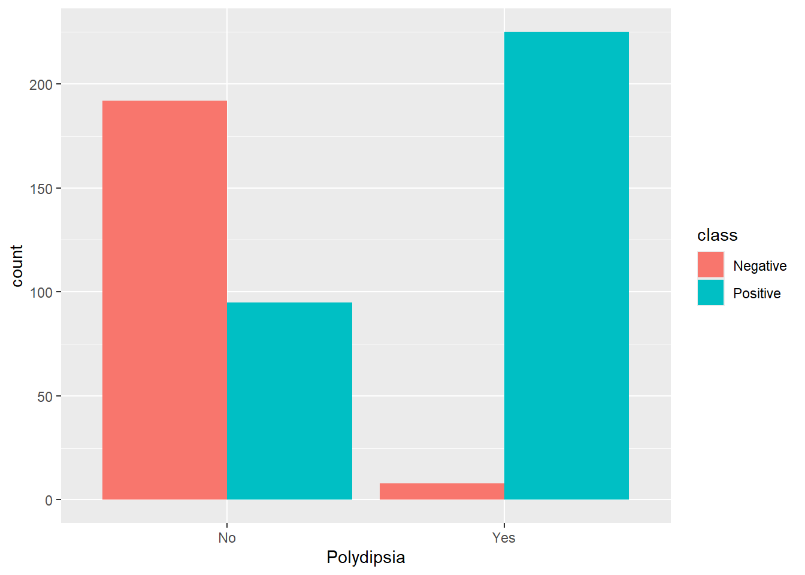
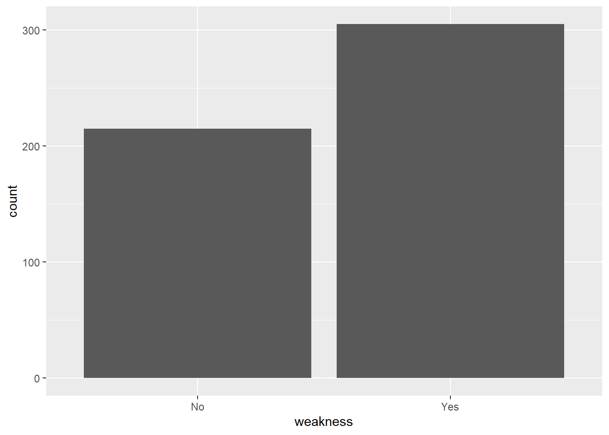
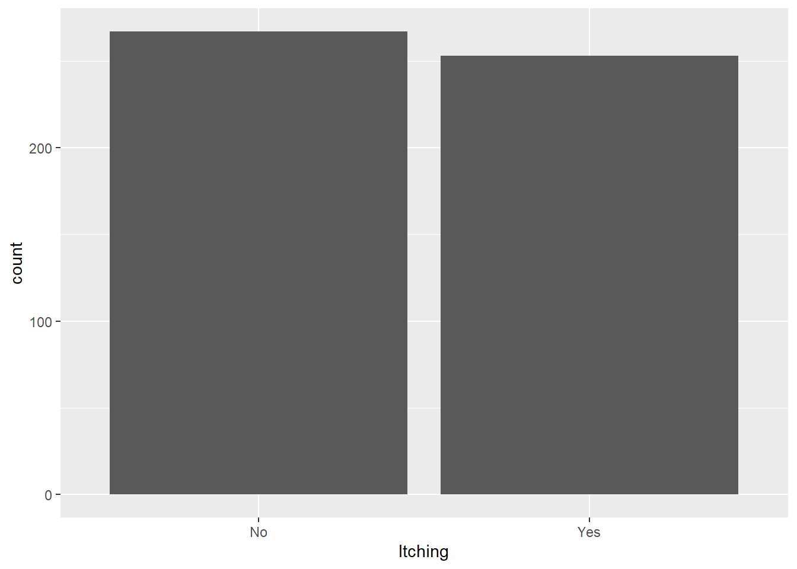
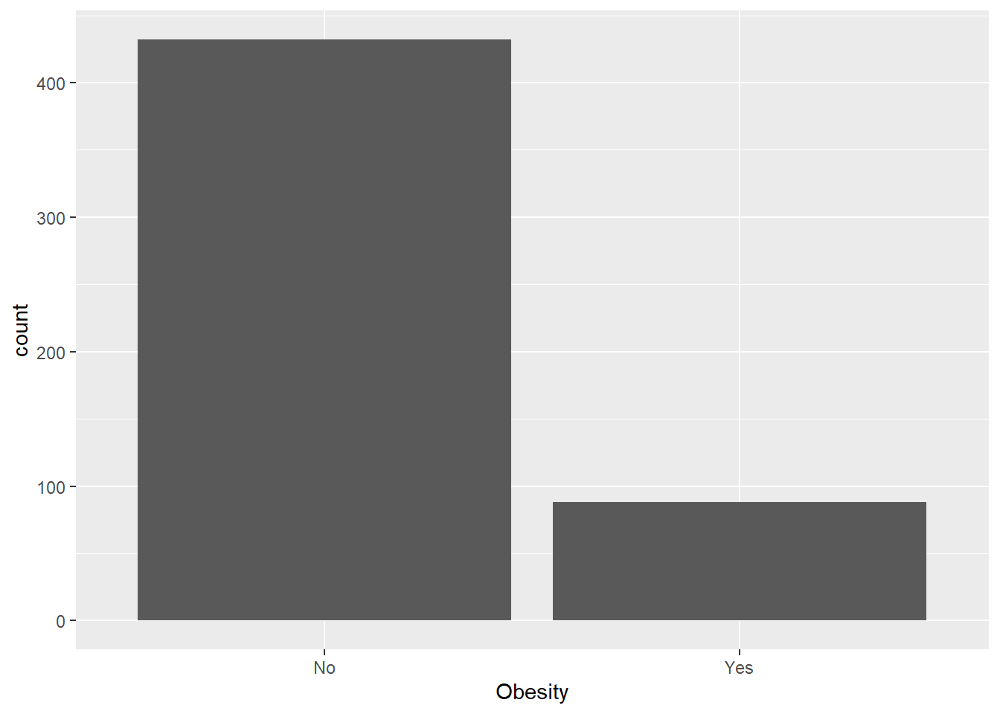
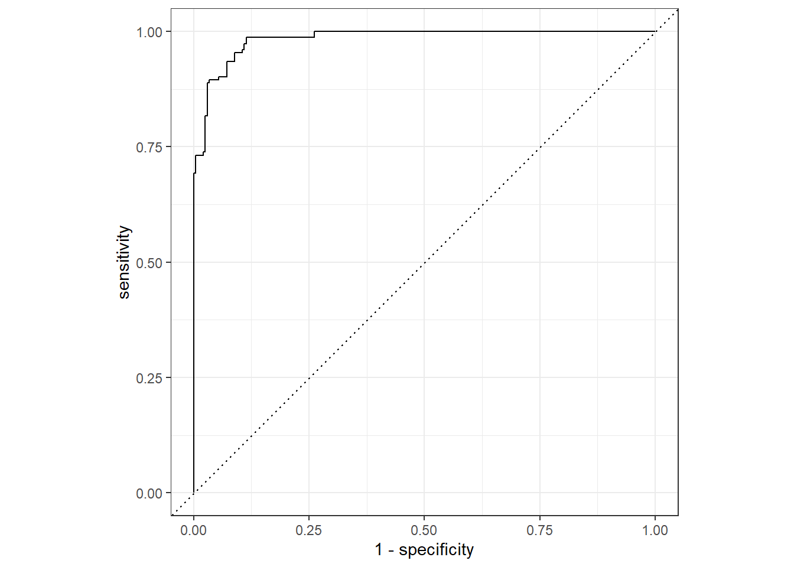

#install.packages("tidyverse")
library(tidyverse)
#install.packages("tidymodels")
library(tidymodels)
#install.packages("data.table")
library(data.table)diabetes_risk_prediction
Overview
Diabetes, a chronic metabolic disorder affecting millions worldwide, poses significant challenges to healthcare systems and individuals alike. Characterized by elevated blood sugar levels, diabetes arises from the body’s inability to produce or effectively utilize insulin, a hormone crucial for regulating blood sugar. Its prevalence is on the rise globally, driven by factors such as sedentary lifestyles, unhealthy dietary habits, and aging populations. Beyond its immediate health impacts, diabetes increases the risk of serious complications, including cardiovascular disease, kidney failure, and blindness, imposing substantial economic and social burdens. Addressing the complexities of diabetes requires a multifaceted approach, integrating medical interventions, lifestyle modifications, and public health initiatives. In this data science portfolio, we delve into the realm of predictive modeling to better understand diabetes risk factors, enhance early detection, and inform targeted interventions, aiming to contribute meaningfully to diabetes management and prevention efforts.
Data Dictionary
Age: This represents the age of the individual in years.
Gender: This is the gender of the individual. It can be Male or Female.
Polyuria: This refers to the presence of excessive urination, which is a common symptom of diabetes.
Polydipsia: This refers to excessive thirst, another common symptom of diabetes.
Sudden weight loss: This indicates whether the individual has experienced unexplained weight loss, which can be a sign of diabetes.
Weakness: This indicates whether the individual experiences general physical weakness, a potential symptom of diabetes.
Polyphagia: This refers to excessive hunger, another potential symptom of diabetes.
Genital thrush: This is a yeast infection that can cause itching, soreness, and other discomforts in the genital area. It can be more common in people with diabetes.
Visual blurring: This indicates whether the individual experiences blurred vision, a potential symptom of diabetes.
Itching: This indicates whether the individual experiences general itching, which can be a symptom of diabetes.
Irritability: This indicates whether the individual experiences irritability, which can be a symptom of diabetes.
Delayed healing: This indicates whether the individual experiences slow healing of wounds, which can be a symptom of diabetes.
Partial paresis: This refers to a partial loss of voluntary movement, which can be a symptom of diabetes.
Muscle stiffness: This indicates whether the individual experiences muscle stiffness, which can be a symptom of diabetes.
Alopecia: This refers to hair loss, which can be a symptom of diabetes.
Obesity: This indicates whether the individual is obese, which is a major risk factor for diabetes.
Code
Library Import and Installation
Data Import
diabetes_data = fread("diabetes_risk_prediction_dataset.csv") %>% as_tibble()
#Quick overview of data class
glimpse(diabetes_data)Rows: 520
Columns: 17
$ Age <int> 40, 58, 41, 45, 60, 55, 57, 66, 67, 70, 44, 38, 3…
$ Gender <chr> "Male", "Male", "Male", "Male", "Male", "Male", "…
$ Polyuria <chr> "No", "No", "Yes", "No", "Yes", "Yes", "Yes", "Ye…
$ Polydipsia <chr> "Yes", "No", "No", "No", "Yes", "Yes", "Yes", "Ye…
$ `sudden weight loss` <chr> "No", "No", "No", "Yes", "Yes", "No", "No", "Yes"…
$ weakness <chr> "Yes", "Yes", "Yes", "Yes", "Yes", "Yes", "Yes", …
$ Polyphagia <chr> "No", "No", "Yes", "Yes", "Yes", "Yes", "Yes", "N…
$ `Genital thrush` <chr> "No", "No", "No", "Yes", "No", "No", "Yes", "No",…
$ `visual blurring` <chr> "No", "Yes", "No", "No", "Yes", "Yes", "No", "Yes…
$ Itching <chr> "Yes", "No", "Yes", "Yes", "Yes", "Yes", "No", "Y…
$ Irritability <chr> "No", "No", "No", "No", "Yes", "No", "No", "Yes",…
$ `delayed healing` <chr> "Yes", "No", "Yes", "Yes", "Yes", "Yes", "Yes", "…
$ `partial paresis` <chr> "No", "Yes", "No", "No", "Yes", "No", "Yes", "Yes…
$ `muscle stiffness` <chr> "Yes", "No", "Yes", "No", "Yes", "Yes", "No", "Ye…
$ Alopecia <chr> "Yes", "Yes", "Yes", "No", "Yes", "Yes", "No", "N…
$ Obesity <chr> "Yes", "No", "No", "No", "Yes", "Yes", "No", "No"…
$ class <chr> "Positive", "Positive", "Positive", "Positive", "…Data Cleansing and Exploratory Data Analysis
#Check Age distribution
diabetes_data %>%
ggplot(aes(x = Age)) +
geom_histogram()#Check QQ Plot for Normality
qqnorm(diabetes_data$Age)
qqline(diabetes_data$Age)Both QQ Plot and Histogram seems to show a normally distributed data. Let’s use shapiro.test() to perform Shapiro-Wilk test for normality.
shapiro.test(diabetes_data$Age)
Shapiro-Wilk normality test
data: diabetes_data$Age
W = 0.98313, p-value = 9.992e-06P-value is way less than 0.05 indicating a non-normal data. Let’s take a look what will be the result if use Kolmogorov-smirnov test.
ks.test(diabetes_data$Age,'pnorm')
Asymptotic one-sample Kolmogorov-Smirnov test
data: diabetes_data$Age
D = 1, p-value < 2.2e-16
alternative hypothesis: two-sidedThe age column failed both Normality Test. Age column is not normal.
Let’s check the Gender column for frequency.
diabetes_data %>%
ggplot(aes(x = Gender)) +
geom_bar()We have more male than female. Let’s try to use our respondent variable as fill and see which class has the most count of Positive or Negative value for Diabetes.
diabetes_data %>%
ggplot(aes(x = Gender, fill = class)) +
geom_bar(position = "dodge")The bar graph shows how Female class have more Positive Diabetes Class compared to Male.
Let’s check Polyuria for distribution and behavior when we add the class column as fill
diabetes_data %>%
ggplot(aes( x = Polyuria))+
geom_bar()diabetes_data %>%
ggplot(aes(x = Polyuria, fill = class)) +
geom_bar(position = "dodge")A clear sign of how having a Polyuria or excessive urination can be a strong indicator of Diabetes.
Let’s check Polydipsia.
diabetes_data %>%
ggplot(aes(x = Polydipsia)) +
geom_bar()diabetes_data %>%
ggplot(aes(x = Polydipsia, fill = class)) +
geom_bar(position = "dodge")
Almost the same behavior for Polydispia. Looks like Polydispia and Polyuria can be use as a strong predictor for Diabetes class.
Let’s explore Sudden weight lost
diabetes_data %>%
ggplot(aes(x = `sudden weight loss`)) +
geom_bar()diabetes_data %>%
ggplot(aes(x = `sudden weight loss`, fill = class)) +
geom_bar(position = "dodge")Another strong indicator for Diabetes Class.
Let’s look at Weakness column.
diabetes_data %>%
ggplot(aes(x = weakness)) +
geom_bar()
diabetes_data %>%
ggplot(aes(x = weakness,fill = class)) +
geom_bar(position = "dodge")Another potential indicator for positive Diabetes Class. Let’s continue to explore all of categorical variables.
diabetes_data %>%
ggplot(aes(x = Polyphagia)) +
geom_bar()diabetes_data %>%
ggplot(aes(x = Polyphagia, fill = class)) +
geom_bar(position = "dodge")diabetes_data %>%
ggplot(aes(x = `Genital thrush`)) +
geom_bar()diabetes_data %>%
ggplot(aes(x = `Genital thrush`, fill = class)) +
geom_bar(position = "dodge")diabetes_data %>%
ggplot(aes(x = `visual blurring`)) +
geom_bar()diabetes_data %>%
ggplot(aes(x = `visual blurring`, fill = class)) +
geom_bar(position = "dodge")diabetes_data %>%
ggplot(aes(x = Itching)) +
geom_bar()
diabetes_data %>%
ggplot(aes(x = Itching, fill = class)) +
geom_bar(position = "dodge")diabetes_data %>%
ggplot(aes(x = Irritability)) +
geom_bar()diabetes_data %>%
ggplot(aes(x = Irritability, fill = class)) +
geom_bar(position = "dodge")diabetes_data %>%
ggplot(aes(x = `delayed healing`)) +
geom_bar()diabetes_data %>%
ggplot(aes(x = `delayed healing`, fill = class)) +
geom_bar(position = "dodge")diabetes_data %>%
ggplot(aes(x = `partial paresis`)) +
geom_bar()diabetes_data %>%
ggplot(aes(x = `partial paresis`, fill = class)) +
geom_bar(position = "dodge")diabetes_data %>%
ggplot(aes(x = `muscle stiffness`)) +
geom_bar()diabetes_data %>%
ggplot(aes(x = `muscle stiffness`, fill = class)) +
geom_bar(position = "dodge")diabetes_data %>%
ggplot(aes(x = Alopecia)) +
geom_bar()diabetes_data %>%
ggplot(aes(x = Alopecia, fill = class)) +
geom_bar(position = "dodge")diabetes_data %>%
ggplot(aes(x = Obesity)) +
geom_bar()
diabetes_data %>%
ggplot(aes(x = Obesity, fill = class)) +
geom_bar(position = "dodge")Splitting Dataset
diabetes_data_model = diabetes_data %>%
mutate_if(is.character,as.factor)
set.seed(222)
data_split = initial_split(diabetes_data_model, prop = 3/4)
training_data = training(data_split)
testing_data = testing(data_split)Training Data Modelling
#Create Recipe
diabetes_logit = recipe(class ~ ., data = training_data)
#Prepare Model Engine
logit_model = logistic_reg() %>%
set_engine("glm")
#Create workflow
diabetes_logit_workflow = workflow() %>%
add_model(logit_model) %>%
add_recipe(diabetes_logit)
#Fit Data
diabetes_logit_fit = diabetes_logit_workflow %>%
fit(data = training_data)
#Extract Metrics
diabetes_logit_fit %>%
extract_fit_parsnip() %>%
tidy() %>%
filter(p.value < 0.05)# A tibble: 7 × 5
term estimate std.error statistic p.value
<chr> <dbl> <dbl> <dbl> <dbl>
1 (Intercept) 2.39 1.15 2.08 3.77e- 2
2 GenderMale -4.50 0.704 -6.39 1.62e-10
3 PolyuriaYes 4.45 0.799 5.57 2.57e- 8
4 PolydipsiaYes 5.49 0.986 5.57 2.60e- 8
5 `Genital thrush`Yes 2.12 0.660 3.22 1.30e- 3
6 ItchingYes -3.02 0.791 -3.82 1.35e- 4
7 IrritabilityYes 1.94 0.687 2.82 4.87e- 3Training Data Model Evaluation
Now that we have our model, we will evaluate it first using our train data. Just for us to have an idea of how our model performs.
#Predict training data using our model
predict(diabetes_logit_fit, training_data) %>%
count(.pred_class)# A tibble: 2 × 2
.pred_class n
<fct> <int>
1 Negative 155
2 Positive 235#Append our predicted class on the actual training class
diabetes_train_aug = augment(diabetes_logit_fit, training_data)
diabetes_train_aug %>%
head()# A tibble: 6 × 20
.pred_class .pred_Negative .pred_Positive Age Gender Polyuria Polydipsia
<fct> <dbl> <dbl> <int> <fct> <fct> <fct>
1 Positive 0.00000191 1.00 43 Female Yes Yes
2 Positive 0.00243 0.998 67 Male No Yes
3 Negative 0.968 0.0319 43 Male No No
4 Positive 0.00000549 1.00 38 Female Yes Yes
5 Positive 0.00000490 1.00 50 Female Yes Yes
6 Positive 0.000103 1.00 30 Female Yes Yes
# ℹ 13 more variables: `sudden weight loss` <fct>, weakness <fct>,
# Polyphagia <fct>, `Genital thrush` <fct>, `visual blurring` <fct>,
# Itching <fct>, Irritability <fct>, `delayed healing` <fct>,
# `partial paresis` <fct>, `muscle stiffness` <fct>, Alopecia <fct>,
# Obesity <fct>, class <fct>Let’s plot an ROC Curve
diabetes_train_aug %>%
roc_curve(truth = class,.pred_Negative) %>%
autoplot()
Then calculate accuracy
diabetes_logit_train_pred = predict(diabetes_logit_fit, training_data) %>%
bind_cols(predict(diabetes_logit_fit, training_data,type = "prob")) %>%
bind_cols(training_data %>% select(class))
diabetes_logit_train_pred %>%
accuracy(truth = class, .pred_class)# A tibble: 1 × 3
.metric .estimator .estimate
<chr> <chr> <dbl>
1 accuracy binary 0.918We have a training accuracy of 92%. To further assess our model, let’s do 10-fold cross validation and compare it with our straight-forward training model performance.
Cross-Fold Validation
set.seed(345)